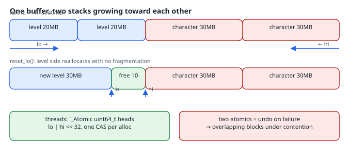

Double-Ended Stack Allocators: Two Lifetimes, One Buffer, No Fragmentation
Double-Ended Stack Allocators: Two Lifetimes, One Buffer, No Fragmentation
After this page you can split one fixed buffer between two independent allocation lifetimes by growing one bump stack up from the bottom and another down from the top. Either side can reset without fragmenting the other. You will use the same layout to pack variable-sized records with an index into a fixed-size packet, and make it thread-safe the right way: one atomic word for both heads, because “an atomic add on each head” overlaps allocations under contention, which the stress test below shows.
Thesis
The arena chapter’s bump allocator frees everything at once. That breaks down when two subsystems with different lifetimes share one memory budget, such as streamed level data and a swappable character model in a game, or payloads and an index in a network packet. Interleave their allocations in one arena and freeing one subsystem leaves holes the other is still pinning. Give each its own end of the buffer instead. Each side is still a stack with O(1) allocation and O(1) reset, the free space is always one contiguous gap in the middle, and the split between the two sides adjusts itself at run time.
Mental model

The invariant is 0 <= lo <= hi <= cap. Bytes [0, lo) belong to the bottom stack, [hi, cap) to the top stack, and [lo, hi) is free. An allocation fails exactly when it would make lo > hi. Note what you give up: each side frees only in LIFO order (marks and rewinds) or all at once.
Worked examples
The allocator
// dstack.h: a double-ended stack allocator over one caller-owned buffer.
// The low head grows up from 0, the high head grows down from cap;
// the buffer is full when they would cross.
#ifndef DSTACK_H
#define DSTACK_H
#include <stddef.h>
#include <stdint.h>
typedef struct {
unsigned char *base;
size_t cap;
size_t lo; // first free byte from the bottom
size_t hi; // one past the last free byte from the top
} DStack;
static inline void dstack_init(DStack *s, void *buf, size_t cap) {
s->base = buf; s->cap = cap; s->lo = 0; s->hi = cap;
}
// align must be a power of two. Alignment is applied to the address,
// so it works whatever the alignment of buf.
static inline void *dstack_alloc_lo(DStack *s, size_t size, size_t align) {
uintptr_t b = (uintptr_t)s->base;
uintptr_t p = (b + s->lo + (align - 1)) & ~(uintptr_t)(align - 1);
size_t off = (size_t)(p - b);
if (off > s->hi || size > s->hi - off) return NULL; // would cross
s->lo = off + size;
return s->base + off;
}
static inline void *dstack_alloc_hi(DStack *s, size_t size, size_t align) {
uintptr_t b = (uintptr_t)s->base;
if (size > s->hi - s->lo) return NULL;
uintptr_t p = (b + s->hi - size) & ~(uintptr_t)(align - 1); // round down
if (p < b + s->lo) return NULL; // would cross
s->hi = (size_t)(p - b);
return s->base + s->hi;
}
// Marks let one side free everything allocated after the mark, in LIFO order.
static inline size_t dstack_mark_lo(const DStack *s) { return s->lo; }
static inline size_t dstack_mark_hi(const DStack *s) { return s->hi; }
static inline void dstack_rewind_lo(DStack *s, size_t m) { s->lo = m; }
static inline void dstack_rewind_hi(DStack *s, size_t m) { s->hi = m; }
static inline void dstack_reset_lo(DStack *s) { s->lo = 0; }
static inline void dstack_reset_hi(DStack *s) { s->hi = s->cap; }
static inline size_t dstack_free(const DStack *s) { return s->hi - s->lo; }
#endifTwo details matter. The top side rounds the address down to the alignment, so its padding sits above the block rather than below it. And both sides check for crossing before moving the head, using subtraction (size > s->hi - off) so a huge size can’t overflow the comparison.
Case 1: two lifetimes without fragmentation
#include <stdio.h>
#include <string.h>
#include <stdalign.h>
#include "dstack.h"
#define MB (1024u * 1024u)
static alignas(64) unsigned char heap[100 * MB];
static void show(const char *what, const DStack *s) {
printf("%-34s lo=%3zuMB hi=%3zuMB free=%3zuMB\n", what,
s->lo / MB, s->hi / MB, dstack_free(s) / MB);
}
int main(void) {
DStack s;
dstack_init(&s, heap, sizeof heap);
// Level data from the bottom, character data from the top, interleaved in time.
dstack_alloc_lo(&s, 20 * MB, 16); dstack_alloc_hi(&s, 30 * MB, 16);
dstack_alloc_lo(&s, 20 * MB, 16); dstack_alloc_hi(&s, 30 * MB, 16);
show("level 20+20, character 30+30", &s);
printf("one more 1MB level chunk: %s\n", dstack_alloc_lo(&s, MB, 16) ? "ok" : "NULL (heads would cross)");
dstack_reset_lo(&s); // player moved: drop all level data
show("level reset", &s);
void *lvl = dstack_alloc_lo(&s, 30 * MB, 16);
printf("new 30MB level chunk: %s\n", lvl ? "ok, contiguous" : "NULL");
show("after new level", &s);
// Scoped scratch on the top side: mark, use, rewind.
size_t m = dstack_mark_hi(&s);
char *tmp = dstack_alloc_hi(&s, 4096, 64);
printf("scratch at offset %td, 64-aligned: %s\n",
(unsigned char *)tmp - heap, ((uintptr_t)tmp % 64 == 0) ? "yes" : "no");
dstack_rewind_hi(&s, m);
show("scratch rewound", &s);
return 0;
}Verified with gcc (Debian 14.2.0-19) 14.2.0, glibc 2.41, under ASan and UBSan:
gcc -std=c23 -O2 -Wall -Wextra -Werror -fsanitize=address,undefined -o demo demo.c && ./demolevel 20+20, character 30+30 lo= 40MB hi= 40MB free= 0MB
one more 1MB level chunk: NULL (heads would cross)
level reset lo= 0MB hi= 40MB free= 40MB
new 30MB level chunk: ok, contiguous
after new level lo= 30MB hi= 40MB free= 10MB
scratch at offset 41938944, 64-aligned: yes
scratch rewound lo= 30MB hi= 40MB free= 10MBWith one arena and the same interleaving (level, character, level, character), freeing the level data would leave two 20 MB holes, and a 30 MB request would fail with 40 MB free. Here the level side’s free space is always one run. The scratch line shows the other use of a top side: a mark-and-rewind region for temporaries that doesn’t disturb either long-lived stack.
Case 2: variable-sized records plus an index in a fixed packet
Payload bytes grow up from the bottom, and a uint16_t offset per record grows down from the top. Record i is found in O(1), and its length is the distance to the next record’s offset (or to lo for the last one). Adding a record is all-or-nothing: if the index slot doesn’t fit, the payload allocation is rewound too.
// Variable-sized records with random access: payloads grow up from the
// bottom, a table of uint16_t offsets grows down from the top.
#include <stdio.h>
#include <string.h>
#include <stdalign.h>
#include "dstack.h"
typedef struct { DStack s; uint16_t *index; size_t n; } Packet;
static int packet_add(Packet *p, const void *rec, size_t len) {
size_t mlo = dstack_mark_lo(&p->s), mhi = dstack_mark_hi(&p->s);
unsigned char *dst = dstack_alloc_lo(&p->s, len, 1);
uint16_t *slot = dst ? dstack_alloc_hi(&p->s, sizeof *slot, alignof(uint16_t)) : NULL;
if (!slot) { // all or nothing: undo the payload too
dstack_rewind_lo(&p->s, mlo); dstack_rewind_hi(&p->s, mhi);
return -1;
}
memcpy(dst, rec, len);
*slot = (uint16_t)(dst - p->s.base);
p->index = slot; // the newest entry is lowest in memory
return (int)p->n++;
}
// Record i (0 = first added) and its length.
static const unsigned char *packet_get(const Packet *p, size_t i, size_t *len) {
const uint16_t *top = (const uint16_t *)(p->s.base + p->s.cap);
uint16_t off = top[-1 - (ptrdiff_t)i];
uint16_t end = (i + 1 < p->n) ? top[-2 - (ptrdiff_t)i] : (uint16_t)p->s.lo;
*len = (size_t)(end - off);
return p->s.base + off;
}
int main(void) {
static alignas(8) unsigned char mtu[64];
Packet p = {0};
dstack_init(&p.s, mtu, sizeof mtu);
const char *cmds[] = {"MOVE 12 40", "FIRE", "CHAT hello there", "PING", "SPAWN orc 7 7 3", "NOP", "BYE"};
for (size_t i = 0; i < sizeof cmds / sizeof *cmds; i++) {
int r = packet_add(&p, cmds[i], strlen(cmds[i]));
printf("add %-18s -> %s (free %zu)\n", cmds[i], r < 0 ? "full" : "ok", dstack_free(&p.s));
}
for (size_t i = 0; i < p.n; i++) {
size_t len; const unsigned char *r = packet_get(&p, i, &len);
printf("[%zu] off=%2td len=%2zu %.*s\n", i, r - mtu, len, (int)len, (const char *)r);
}
return 0;
}gcc -std=c23 -O2 -Wall -Wextra -Werror -fsanitize=address,undefined -o packet packet.c && ./packetadd MOVE 12 40 -> ok (free 52)
add FIRE -> ok (free 46)
add CHAT hello there -> ok (free 28)
add PING -> ok (free 22)
add SPAWN orc 7 7 3 -> ok (free 5)
add NOP -> ok (free 0)
add BYE -> full (free 0)
[0] off= 0 len=10 MOVE 12 40
[1] off=10 len= 4 FIRE
[2] off=14 len=16 CHAT hello there
[3] off=30 len= 4 PING
[4] off=34 len=15 SPAWN orc 7 7 3
[5] off=49 len= 3 NOPThe 64-byte packet holds six commands and their index with zero bytes to spare. No length prefixes are needed, because the index already implies them. The receiver needs the record count (or lo) in a header to find where the index starts.
Case 3: sharing it between threads
For a single stack, atomic_fetch_add on the head is a complete lock-free allocator. It’s tempting to extend that to two heads: fetch_add on lo, check against hi, and fetch_sub to undo if the heads crossed. The undo is the bug. Undos from different threads land in a different order than their bumps, so a late undo can move lo back below a block another thread has just been given, and the next allocation overlaps it. The fix is to make “check for crossing and move a head” a single step. Pack both 32-bit heads into one 64-bit atomic and update it with compare-and-swap. A failed allocation then never changes the state.
#define _POSIX_C_SOURCE 200809L
// Two lock-free variants of a shared double-ended stack, stress-tested for
// overlapping allocations. Build: gcc -std=c23 -O2 -pthread mt.c
#include <stdatomic.h>
#include <pthread.h>
#include <stdint.h>
#include <stdio.h>
#include <stdlib.h>
#include <string.h>
enum { CAP = 4096, THREADS = 8, PER_THREAD = 256, ROUNDS = 20000 };
// --- Variant A: one atomic per head, fetch_add then check, undo on failure.
static _Atomic size_t lo_a, hi_a;
static long alloc_naive(int top, size_t n) {
if (!top) {
size_t off = atomic_fetch_add(&lo_a, n);
if (off + n > atomic_load(&hi_a)) { atomic_fetch_sub(&lo_a, n); return -1; }
return (long)off;
}
size_t end = atomic_fetch_sub(&hi_a, n);
if (end < n || end - n < atomic_load(&lo_a)) { atomic_fetch_add(&hi_a, n); return -1; }
return (long)(end - n);
}
// --- Variant B: both heads packed in one 64-bit word, updated by CAS.
static _Atomic uint64_t heads; // low 32 bits: lo, high 32 bits: hi
static long alloc_packed(int top, size_t n) {
uint64_t cur = atomic_load_explicit(&heads, memory_order_relaxed), next;
long off;
do {
uint32_t lo = (uint32_t)cur, hi = (uint32_t)(cur >> 32);
if (n > hi - lo) return -1; // full: no state change
if (!top) { off = lo; next = ((uint64_t)hi << 32) | (lo + n); }
else { off = hi - n; next = ((uint64_t)(hi - n) << 32) | lo; }
} while (!atomic_compare_exchange_weak_explicit(&heads, &cur, next,
memory_order_acq_rel, memory_order_relaxed));
return off;
}
typedef struct { long off[PER_THREAD]; unsigned len[PER_THREAD]; int n, fails; unsigned seed; } Log;
static long (*alloc_fn)(int, size_t);
static Log logs[THREADS];
static pthread_barrier_t go;
static void *worker(void *arg) {
Log *L = arg;
L->n = L->fails = 0;
pthread_barrier_wait(&go);
for (int i = 0; i < PER_THREAD; i++) {
unsigned len = 1 + rand_r(&L->seed) % 48;
long off = alloc_fn(rand_r(&L->seed) & 1, len);
if (off < 0) { L->fails++; continue; }
L->off[L->n] = off; L->len[L->n++] = len;
}
return NULL;
}
static int run(const char *name, long (*fn)(int, size_t)) {
static unsigned char owner[CAP];
long overlaps = 0, bad_rounds = 0, wasted = 0;
alloc_fn = fn;
for (int r = 0; r < ROUNDS; r++) {
atomic_store(&lo_a, 0); atomic_store(&hi_a, CAP);
atomic_store(&heads, (uint64_t)CAP << 32);
pthread_t t[THREADS];
pthread_barrier_init(&go, NULL, THREADS);
for (int i = 0; i < THREADS; i++) { logs[i].seed = r * 131u + i; pthread_create(&t[i], NULL, worker, &logs[i]); }
for (int i = 0; i < THREADS; i++) pthread_join(t[i], NULL);
pthread_barrier_destroy(&go);
memset(owner, 0, sizeof owner);
long ov = 0, used = 0;
for (int i = 0; i < THREADS; i++)
for (int k = 0; k < logs[i].n; k++)
for (unsigned b = 0; b < logs[i].len[k]; b++) {
long p = logs[i].off[k] + b;
if (p < 0 || p >= CAP || owner[p]) ov++; else { owner[p] = 1; used++; }
}
overlaps += ov; bad_rounds += ov > 0;
wasted += CAP - used; // bytes never handed out
}
printf("%-26s rounds=%d rounds with overlap=%ld overlapping bytes=%ld avg unused bytes/round=%ld\n",
name, ROUNDS, bad_rounds, overlaps, wasted / ROUNDS);
return bad_rounds != 0;
}
int main(void) {
int a = run("fetch_add + undo", alloc_naive);
int b = run("packed heads + CAS", alloc_packed);
return (a << 1) | b;
}gcc -std=c23 -O2 -Wall -Wextra -Werror -pthread -o mt mt.c && time ./mt; echo "exit=$?"fetch_add + undo rounds=20000 rounds with overlap=3858 overlapping bytes=27122 avg unused bytes/round=1
packed heads + CAS rounds=20000 rounds with overlap=0 overlapping bytes=0 avg unused bytes/round=0
exit=2
real 0m10.153s
user 0m13.124s
sys 0m13.093sThat’s 8 threads on 8 CPUs, a 4 KiB buffer, and 256 random 1–48 byte requests per thread per round, enough to fill the buffer every round. The two-atomic version handed out overlapping memory in about 19% of rounds. The packed version never did, and it filled the buffer completely. The CAS loop can retry under contention, so it is lock-free rather than wait-free. If one subsystem’s allocation rate dominates, a per-thread or per-side front cache is the next step. The packed version limits cap to 4 GiB; use unsigned __int128 with a 16-byte CAS, or a mutex, beyond that.
Things that bite
- Lifetimes, not sizes, decide the split. If two “sides” in fact free in interleaved order, a double-ended stack just moves the fragmentation into rewinds that can’t happen. Each side must free LIFO or all at once.
- Pointers into a reset side dangle. As with any arena, ASan won’t see it unless you poison the freed range yourself (see the arena chapter’s
ARENA_POISON). - Alignment on the top side rounds down. Computing
hi - sizeand then rounding up would push the block pasthiinto memory the top stack already owns. - No destructors. Anything owning a file descriptor or a
malloc’d buffer must be cleaned up before its side resets.
Try this
- Add
dstack_high_water(const DStack *), which tracks the smallest gap ever seen, and use it to size the buffer from a real run. - Make
packet_addstore a 1-byte record type in the index entry next to the offset, and measure how many morePINGs fit than with a type byte in each payload. - In
mt.c, replace the undo inalloc_naivewith “leak the bytes on failure” (nofetch_sub). Do overlaps disappear? What happens toavg unused bytes/round, and why does that still make it unusable near capacity?
Sources
- Alan Wolfe, “The Double Headed Stack Allocator” (2026-10-03): https://blog.demofox.org/2026/10/03/the-double-headed-stack-allocator/
- C atomics,
atomic_compare_exchange_weak_explicit: https://en.cppreference.com/w/c/atomic/atomic_compare_exchange atomic_fetch_add: https://en.cppreference.com/w/c/atomic/atomic_fetch_addalignasandalignofin C: https://en.cppreference.com/w/c/language/_Alignas- POSIX
pthread_barrier_wait: https://pubs.opengroup.org/onlinepubs/9799919799/functions/pthread_barrier_wait.html - D. E. Knuth, The Art of Computer Programming, Vol. 1, §2.2.2 (two stacks sharing one memory area, growing toward each other).